的取值
的取值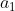
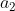
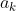
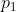

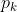
5.2 拟合优度检验
英国统计学家卡尔·皮尔逊是现代统计学主要的奠基者之一。他生于 1857 年，比费歇尔大 33 岁。在费歇尔还是一个孩子的时候，他已成了举世闻名的大统计学家。费歇尔投身统计学，就是从学习他的系列论文《数学对进化论的贡献》开始的。在这系列论文中，皮尔逊提出了一些有基本意义的概念和方法，有的至今仍在沿用。他的工作大大促进了统计学从一些零散的方法走向系统化的独立学科的进程。他的儿子爱根·皮尔逊也是 20 世纪的顶级统计学家，与另一位大统计学家奈曼合作，在 20 世纪二三十年代建立了假设检验的理论架构。
如今要谈到卡尔·皮尔逊在统计学上的一项重要贡献，属于假设检验的领域，叫“拟合优度检验”。皮尔逊关于这个问题的文章发表于 1900 年，不少统计学者把此文的发表作为现代统计学兴起的标志。
我们先从几个实例开始。设想要把一个骰子拿来作赌具，需要使大家相信这个骰子是均匀的，即在投掷时各面出现的概率都是 1/6（表 5.1）。
表 5.1 投掷均匀骰子时，各面出现的概率
| 点数 | 1 | 2 | 3 | 4 | 5 | 6 |
| 概率 | 1/6 | 1/6 | 1/6 | 1/6 | 1/6 | 1/6 |
为此要进行试验：把这个骰子投掷
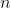
次，记录得 1, 2,…, 6，各点出现的次数分别为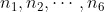
。问题是：所得数据与分布表（表 5.1）拟合（符合）得怎样？或者说，根据所得的试验数据，对“骰子均匀”这个假设能相信到怎样的程度？另一个例子：一家工厂在一段时期以来记录到 15 次生产事故，其中早、晚班各 6 次，中班 3 次。这个数据使人怀疑发生事故的机会大小（概率）与班次有关，比如中班发生事故的可能性小一些。要用这些数据来检验一下。
检验的假设定为“各班次在事故概率上无差别”（表 5.2）。
表 5.2 假定各班次在事故概率上无差别
| 班次 | 早班 | 中班 | 晚班 |
| 事故概率 | 1/3 | 1/3 | 1/3 |
起初我们的怀疑是各班次事故的概率有差别，但把“无差别”列为受检验的假设，这样做的道理在前面已经解释过了。与上例一样，问题仍然是：所得数据（6, 3, 6）与分布表（表 5.2）拟合的程度如何。
推广以上两例，得到这类问题一般的提法。有一个随机变量
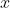
，根据某种理论，其分布如表 5.3 所示。表 5.3 的事故概率
| 的取值 |  |  | … |  |
| 事故概率 |  | | … |  |
为检验这是否正确，对 进行 次观察，发现其取
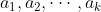
等值的次数分别为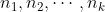
。问这一结果与分布表（表 5.3）拟合的程度如何。有的例子中表面上不是这个形式，但实质是如此。如在工厂事故的例子中，只需形式地引进一个变量 （对早班，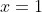
；而对中、晚班， 分别等于 2 和 3）就归入到表 5.3 的形式。皮尔逊处理这个问题的想法是：找一个反映数据与假设的偏差的量
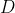
， 愈小，数据与假设之间的拟合就愈好。按一定的方法把 值转换成一个概率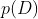
。 的意思可以确切地解释为：即使假设正确，但由于观察结果受到偶然性的影响，数据与假设之间也会呈现一定的偏差。偏差大到或超过 这样的限度的概率，就是 。 愈大，就表明发现像 这么大的偏差不算稀奇，而我们就认为观察数据与假设拟合得比较好。如果 很小，就表明：所发现的偏差，仅从观察结果受到偶然影响这方面去解释就比较牵强。因此，把概率 称为（数据与假设之间的）拟合优度。如果要求一个黑白分明的判定，则可以定下一个阈值，例如 0.05、0.01 之类，当 小于此阈值时，就否定假设。这与费歇尔的显著性检验一样，此阈值也就是检验的水平。下面要谈到皮尔逊如何去构造这个反映偏差的量 。一共观察了 次，因为
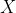
取 为值的概率为
为值的概率为 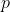
，平均讲在 次观察中 应有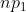
次值，而真实观察到的取 的次数 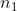
，这两个值之差的平方，即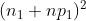
，是观察结果与假设分布之间呈现的偏差（取平方是为避免产生负值以致正负抵消）。但皮尔逊把此量除以 ，即用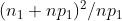
取代 。对每个值， 都做这个计算，并将结果相加，就得到 ：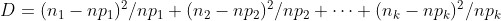
（1）它称为皮尔逊统计量。为什么要把每个平方相应地用
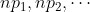
去除？这一点正是皮尔逊的工作中的精粹之处，其解释牵涉到复杂的理论问题。可以说的是：这是为了方便将 值转换为拟合优度 。剩下的问题是如何将 转换为概率 。确切的转换公式现在还不知道，但皮尔逊导出了一个可用的近似公式，它依赖于一个复杂的概率分布，不能在此细述，我们只在表 5.4 中列出相应于阈值 0.05 和 0.01 的 值。这也只是一种近似，确切值现在还不知道。
表 5.4 对应于阈值 0.05 和 0.01 的 值
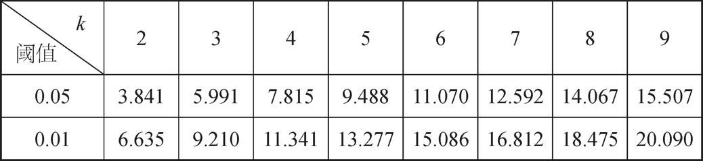
表中所列的，就是相应于某个
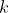
（ 就是表 5.3 中的那个 ）和阈值的 值。若由数据算出的 值超过表中的值，则认为观察数据与假设的偏差，已大到不能仅用偶然性去解释的地步，而决定否定原假设。若 不超过表中的值，则认为偏差尚未大到不可用偶然性去解释的程度，而维持这个假设。当然，这不等于说证明了假设的正确性。也许是因为数据量太少，与假设的背离未能充分反映出来。有点儿像这个情况：在法庭上宣告一个被告无罪，不一定能理解为确实证明了他无罪，只是说从已有的证据看，尚无足够的理由认为他有罪。让我们用皮尔逊的方法来处理前面提到的例子。在工厂事故的例子中，
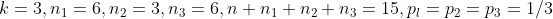
。代入公式（1），得 值为：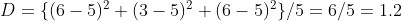
此值小于表 5.4 中
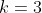
所对应的 值。因此，在 0.05 的水平上，数据没有给“各班次发生事故的机会有差异”这个说法以足够的支持。事实上，更详细的统计表给出 值 1.2 所对应的拟合优度为 0.55。这甚至可以解释为，数据与“各班次事故概率无差异”的假设符合得很好。不习惯于统计推理的人，对这样的结论可能难于理解。他们觉得，从数据上看，中班事故明显偏低，为何用统计方法一分析，反倒把这样明显的事实也否定了。其所以有这种误解，是因为对偶然性的影响估计不足。让我们来做一个试验：取 15 个球，准备 3 个盒子，上面分别书写数字 1、2、3。另外一个竹筒里放了 3 支签，上面也分别书写数字 1、2、3。每次取一个球，同时从竹筒中抽出一支签，将球放入签上所标数字的盒中。球放入每个盒中有同等机会，这相当于“各班次事故机会相同”的假设。把 15 个球全按上述方式处理完后，15 个球在 3 个盒子中的分布，个数不一定相同，甚至偶尔也可能有较大差别。但无论差别多大，都是由于偶然性的作用，并非某一个盒子占有优势。那么我们问：在这样纯粹的偶然性的作用下，3 个盒子中的球数呈现 6∶3∶6 甚至更大的差异的机会能有多少？答案是 0.55，即前面提到的 值 1.2 所对应的拟合优度。这样，纯系出乎偶然性的作用，已有一半以上的机会，产生出像数据中呈现的 6∶3∶6 甚至更大的差异。我们说数据没有给各班次事故概率有差异的说法以足够的支持，指的就是上述道理。
同样的计算表明，即使三个班次的事故数达到 7、1、7 这样不平衡的程度，在 0.05 的水平上仍不能否定“事故概率与班次无关”的假设。可以算出：纯粹出于偶然的原因，产生这么大甚至更大差异的机会，仍有约 0.10。这概率不算太小，因而不能排斥用偶然性来解释所观察到的差异的可能。
造成这种情况的原因是数据量不够。设想一共观察了 30 次事故而仍保持 7∶1∶7 的比例，即早、晚班各有事故 14 次，中班 2 次。按公式算出的 值为
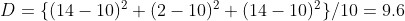
査表 5.4 中的 一栏，发现此值已超过了表中相应于 0.01 的界限。这表明：纯由偶然性产生这么大差异的机会，不到 0.01，因而我们放弃用偶然性来解释这结果的立场，转而支持“各班次事故概率确有差异”的说法。统计方法的要旨在于最大限度地利用数据中包含的信息。数据太少，提供的信息就不够，就不足以据此做出可靠的结论。
再看均匀骰子的例子。设将这个骰子投掷 60 次，结果出现 1, 2, 3, 4, 5, 6 点的次数，分别为 7, 6, 12, 14, 5, 16，其相应的频率依次为
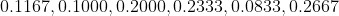
，这与“骰子均匀”（各点出现概率都是 1/6 ≈ 0.1667）的假设相去甚远。按公式（1）计算 值为
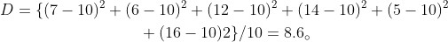
査表 5.4 的
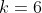
一栏，发现此值未超过水平 0.05 的界限 11.070。故在 0.05 的水平上，尚不能说数据给“骰子非均匀”已足够的支持。现设将骰子投掷至 9 000 000 次，发现 1, 2,…, 6 各点出现次数依次为
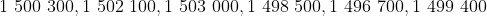
，各点出现频率依次为
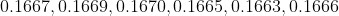
，都与理论概率 1/6 = 0.1667 相差甚微。故看上去给人的印象是：数据与“骰子均匀”的假设符合得很好。但具体按公式（1）计算 值，得出
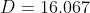
，超过了表 5.4 中的 一栏中与水平 0.01 相应的值 15.086。这表明：如果承认骰子是均匀的，则产生这么大差异的机会不到百分之一，因而数据非常支持“骰子不均匀”的说法。在本例中，之所以能把这么小的差异也检定出来，是因为数据量特别大，其提供的信息使我们能做到“明察秋毫”的地步。这两个例子的分析还给了我们一点重要的启示：一个效应或差异在统计上显著不显著，与其在现实上的重要性不完全是一回事。看一个效应或差异在统计上是否显著，只有一个标准，即这个差异是否超出了能用偶然性去解释的范围（当然，这个范围也是人制订的，有一定的弹性）。尽管差异很小，看上去没有应用上的重要意义，只要它不能合理地用偶然性去解释，就认为它在统计上有显著性。反之，尽管差异很大，从应用上看值得引起注意，但如它还可以用偶然性的影响去解释，则不能认为它在统计上有显著性。更确切地说，要更可靠地认定数据所表现的差异确是实质性的，还有待于进一步的研究，例如做更多的观察或试验，以提供更充分的数据。